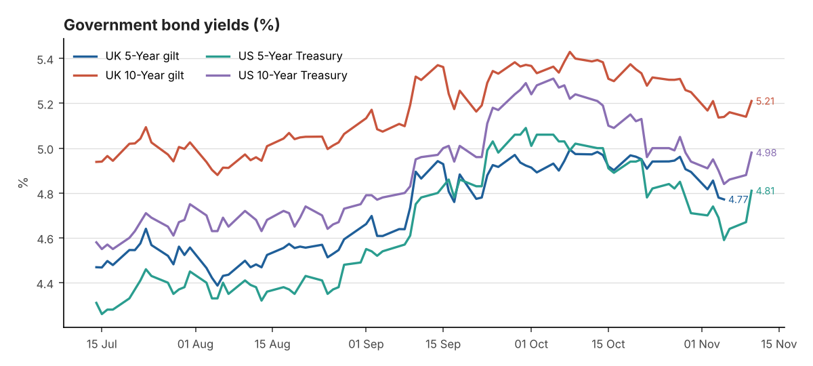
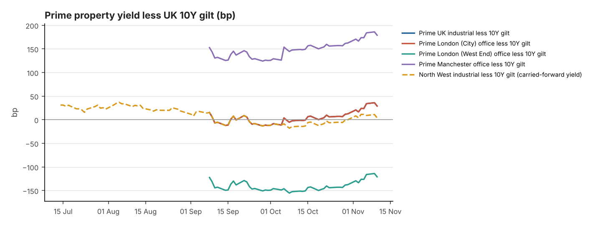

Date: 11 November 2026
Reporting time: 08:00 UK time
Generated 2026-11-11 07:49 UTC · run 20261111T074942Z · commentary source: analyst note. Every figure shows its own observation date: markets close the previous business day, inflation is monthly, and property yields are published monthly or quarterly.
| Market | Latest Yield | Daily Change | 7-Day Change | 30-Day Change | Observation Date | Source |
|---|---|---|---|---|---|---|
| UK 5-Year gilt | 4.77% ⚠ stale | -0.8bp | -13.5bp | -12.8bp | 05 Nov 2026 | Bank of England Database (IADB) |
| UK 10-Year gilt | 5.21% | +7bp | 0bp† | -18.9bp† | 10 Nov 2026 | Trading Economics (secondary) |
| US 5-Year Treasury | 4.81% | +14bp | +7bp | -21bp | 10 Nov 2026 | US Treasury - Daily Treasury Par Yield Curve Rates |
| US 10-Year Treasury | 4.98% | +10bp | +3bp | -26bp | 10 Nov 2026 | US Treasury - Daily Treasury Par Yield Curve Rates |
Additional reference
| Market | Latest Yield | Daily Change | 7-Day Change | 30-Day Change | Observation Date | Source |
|---|---|---|---|---|---|---|
| UK 2-Year gilt | 4.76% ⚠ stale | Not verified | Not verified | Not verified | 05 Nov 2026 | News report (rallies.ai) of BoE decision-day trading (secondary) |
| UK 30-Year gilt | 5.63% | Not verified | Not verified | Not verified | 10 Nov 2026 | Trading Economics (secondary) |
| US 2-Year Treasury | 4.73% | +17bp | +12bp | -7bp | 10 Nov 2026 | US Treasury - Daily Treasury Par Yield Curve Rates |
| US 30-Year Treasury | 5.35% | +9bp | +3bp | -25bp | 10 Nov 2026 | US Treasury - Daily Treasury Par Yield Curve Rates |
Yield curve (10Y less 5Y): UK Not verified (5Y and 10Y not held for the same date) · US +17bp (10 Nov 2026)
Changes are in basis points (1 percentage point = 100bp). The 7-day and 30-day changes compare against the last observation on or before that many calendar days earlier. † = the comparison point comes from a different source or instrument than the latest figure, so treat it as indicative. UK gilt figures from the Bank of England's database are fitted par yields, not benchmark-gilt redemption yields. US figures are Treasury constant-maturity par yields.
| Indicator | Latest | Previous | Reporting Date | Trend | Source |
|---|---|---|---|---|---|
| BoE Bank Rate | 4.00% | 3.75% | effective 05 Nov 2026 | +25bp | Bank of England Database (IADB) |
| SONIA (overnight fixing) | 3.9852% | 3.9824% | 06 Nov 2026 | +0.3bp d/d | FRED IUDSOIA |
| 5Y SONIA swap (finance cost reference, not SONIA) | 4.58% | 4.74% | 04 Nov 2026 | Not verified 30d | Knight Frank Prime Yield Guide (Macrobond/ICAP) (secondary) |
| US Fed funds target range | 3.75–4.00% | 3.50–3.75% (to 16 Sep 2026) | effective 17 Sep 2026 | — | FRED DFEDTARU |
| UK CPI (12m) | 3.5% | 3.1% | September 2026 (published 21 Oct 2026) | Accelerating | ONS MM23 |
| UK CPIH (12m) | 3.6% | 3.3% | September 2026 (published 21 Oct 2026) | Accelerating | ONS MM23 |
| UK core CPI (12m, ex energy, food, alcohol & tobacco) | 2.8% | 2.6% | September 2026 (published 21 Oct 2026) | Accelerating | ONS MM23 |
| US CPI-U (12m, NSA) | 3.7% | 3.4% | September 2026 | Accelerating | BLS CPI via FRED CPIAUCNS |
| US core CPI-U (12m, NSA) | 2.6% | 2.4% | September 2026 | Broadly stable | BLS CPI via FRED CPILFENS |
Next ONS inflation release: Not verified · Next MPC decision: 17 Dec 2026
Trend compares the last three monthly readings: a move of more than 0.15pp is "accelerating" or "moderating"; anything smaller is "broadly stable". US annual rates are calculated from the BLS not-seasonally-adjusted index (via FRED) and rounded to one decimal place, the same way BLS rounds its headline. SONIA here is the overnight fixing, not term SONIA or SONIA swap rates.
Confirmed: Bank Rate is 4.00% (since 5 Nov). SONIA fixed at 3.99% on 6 November. The Fed target range is 3.75–4.00%. Press reports say markets expect a Fed hike at the 9 December FOMC after the CPI data (Fox Business).
Market-implied expectations for the 17 December MPC: Not verified. No reliable dated OIS or futures pricing was found today.
Financing read-across (interpretation): A rise in global yields, led by US short rates, tends to lift sterling swap rates too. The last verified 5Y SONIA swap was 4.58% on 4 November (Knight Frank/ICAP), and today's move probably pushed it higher (not verified). Fixed-rate debt costs remain above prime industrial yields, so leverage stays negative.
| Sector | Latest Yield | Basis | Previous Yield | Movement | Evidence Date | Source |
|---|---|---|---|---|---|---|
| UK Industrial & Logistics | 5.50% | NIY | 5.25–5.50% | +12.5bp | Nov 2026 | Knight Frank Prime Yield Guide |
| Prime Distribution Warehouses ‡ | 5.50–5.75% | Not stated | 5.50% | +12.5bp | Nov 2026 | Knight Frank Prime Yield Guide |
| South East Industrial ‡ | 5.25–5.50% | Not stated | 5.25% | +12.5bp | Nov 2026 | Knight Frank Prime Yield Guide |
| Greater London Industrial | 5.25% | Not stated | 5.00–5.25% | +12.5bp | Nov 2026 | Knight Frank Prime Yield Guide |
| Prime Multi-let Industrial (Rest of UK) ‡ | 5.25–5.50% | Not stated | 5.25% | +12.5bp | Nov 2026 | Knight Frank Prime Yield Guide |
| North West Industrial ‡ | 5.25% | NIY | — | — | Q4 2025 ⚠ carried forward (315 days) | Knight Frank LOGIC: North West 2025 Review |
| UK Logistics (average of 71 submarkets) ‡ | 5.74% | NIY | 5.59% | +15bp | Q3 2026 | Cushman & Wakefield UK Industrial MarketBeat |
| London West End Offices | 4.00% | Not stated | 3.75–4.00% | +12.5bp | Nov 2026 | Knight Frank Prime Yield Guide |
| London City Offices | 5.50% | Not stated | 5.25–5.50% | +12.5bp | Nov 2026 | Knight Frank Prime Yield Guide |
| Manchester Offices ‡ | 7.00% | Not stated | 6.75–7.00% | +12.5bp | Nov 2026 | Knight Frank Prime Yield Guide |
| Regional UK Offices ‡ | 7.00% | Not stated | 6.75–7.00% | +12.5bp | Nov 2026 | Knight Frank Prime Yield Guide |
‡ Substitutions and definitions:
Prime yields come from agents' published research and are carried forward until a newer figure is published. They are not daily valuations. Movement is the change between the two latest published figures, using the midpoint where a range is quoted. Net initial yield (NIY) is current net income ÷ gross price including purchaser's costs. Equivalent yield is the internal rate of return, assuming current rent rises or falls to market rent at review or lease expiry. The two are not interchangeable. Where a source does not state the basis, the table says "Not stated".
| Spread | Property yield (basis) | UK 10Y gilt | Latest spread | Spread at property evidence date | Previous comparable spread | Change | Driver |
|---|---|---|---|---|---|---|---|
| Prime UK industrial less 10Y gilt | 5.50% (NIY, Nov 2026) | 5.21% (10 Nov 2026) | +29bp | +34bp (gilt 5.16%, 06 Nov 2026) | +3.8bp (Oct 2026) | +25.2bp (property +12.5bp, gilt +12.7bp) | Both (reinforcing) |
| Prime London (City) office less 10Y gilt | 5.50% (Not stated, Nov 2026) | 5.21% (10 Nov 2026) | +29bp | +34bp (gilt 5.16%, 06 Nov 2026) | +3.8bp (Oct 2026) | +25.2bp (property +12.5bp, gilt +12.7bp) | Both (reinforcing) |
| Prime London (West End) office less 10Y gilt | 4.00% (Not stated, Nov 2026) | 5.21% (10 Nov 2026) | -121bp | -116bp (gilt 5.16%, 06 Nov 2026) | -146.2bp (Oct 2026) | +25.2bp (property +12.5bp, gilt +12.7bp) | Both (reinforcing) |
| Prime Manchester office less 10Y gilt | 7.00% (Not stated, Nov 2026) | 5.21% (10 Nov 2026) | +179bp | +184bp (gilt 5.16%, 06 Nov 2026) | +153.8bp (Oct 2026) | +25.2bp (property +12.5bp, gilt +12.7bp) | Both (reinforcing) |
| North West industrial less 10Y gilt | 5.25% (NIY, Q4 2025) | 5.21% (10 Nov 2026) | +4bp | +78.4bp (gilt 4.47%, 31 Dec 2025) | Not verified | Not verified | Not verified |
The spread is a simple yield gap: the property yield (midpoint of any quoted range) minus the UK 10-year gilt yield. It ignores rental growth, depreciation, capex, liquidity and leverage, so it is not a complete measure of investment risk or relative value. The gilt contribution has the opposite sign to the gilt move (a higher gilt yield narrows the spread). All rows use Knight Frank prime yields so the source is consistent. Knight Frank states the basis (NIY) only for prime distribution and the North West figure; for the office rows the basis is not stated.


Lines overlap where the published yields are identical: Prime UK industrial less 10Y gilt and Prime London (City) office less 10Y gilt.
Confirmed developments (from verified data)
Interpretation
The main development is a renewed rise in bond yields after hotter-than-expected US inflation. October US CPI rose 0.4% on the month and core 0.3%, both above consensus. Treasuries sold off from the front end, with the 2-year up 17bp and the 10-year back near 5%. Gilts moved with them: the 10-year benchmark was quoted at 5.21%, up 7bp on the day, and the 30-year at 5.63%. Official Bank of England curve data could not be retrieved today, so UK figures after 5 November are market quotes and are flagged in Table A.
For UK rates, the confirmed position is unchanged: Bank Rate is 4.00% and the next MPC decision is on 17 December. What has changed is the external backdrop. A Fed moving towards another hike, combined with UK inflation already at 3.5% (September) and next published on 18 November, makes further BoE tightening more plausible, though market pricing for December is not verified.
For property, no new valuation evidence has been published since Knight Frank's 6 November guide, so prime yields are carried forward, not re-valued. The yield gap for prime industrial is about 29bp over gilts. If gilts move back towards 5.4%, the level reached in early October, that gap would disappear again, and agents' next updates (early December) would likely show further outward movement. On current evidence, bond markets point to continued mild pressure on prime capital values, with income growth carrying returns.
There is still no published 2026 North West prime industrial yield. Knight Frank's Q4 2025 Manchester figure of 5.25% NIY is carried forward and looks low against the national 5.50%+ for prime distribution; a level around 5.50% would be consistent with that evidence but is not verified. Investor appetite for the region has held up, with Knight Frank reporting Manchester investment volumes up 34% year to date. Occupier demand is softer: Savills reports North West take-up of 1.28m sq ft in H1 2026, 15.5% below H1 2025. With gilts rising again this week, equity-led buyers are likely to stay selective, favouring reversionary multi-let estates over long-let big boxes.
| Date | Event |
|---|---|
| Thu 12 Nov | UK GDP first quarterly estimate Q3 2026 and monthly GDP (September) - 07:00 |
| Fri 13 Nov | US PPI (October) - 13:30 UK |
| Tue 17 Nov | UK labour market overview - 07:00 |
Source discrepancies (lower-priority figure not used):
Prepared automatically from public sources for professional information. It is not investment advice. Full observation history: data/observations.csv; audit trail: data/audit_log.csv; property evidence register: data/property_yields.csv.